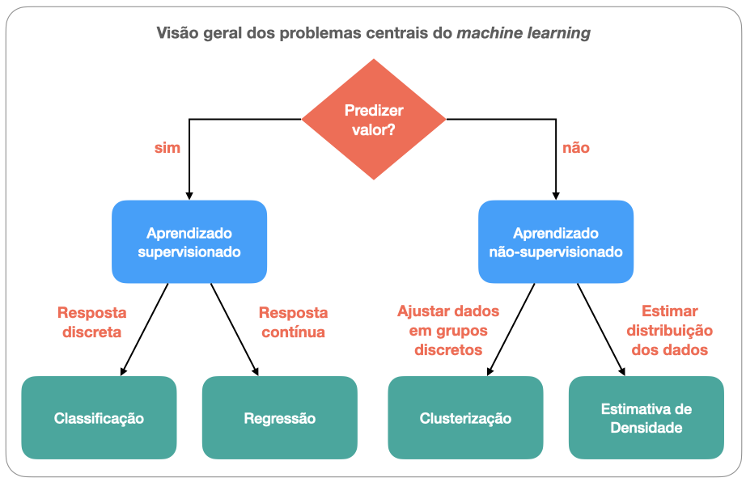

Aprendizado de máquina - I¶
Subcampo da IA que tem por objetivo permitir que o computador aprenda com os dados sem ser explicitamente programado.
Em linhas gerais, no machine learning se constrói algoritmos que leem dados, aprendem com a “experiência” deles e inferem coisas a partir do conhecimento adquirido.
Área tem sido de grande valor por ser capaz de transformar dados aparentemente desconexos em informações cruciais para a tomada de decisões por meio do reconhecimento de padrões significativos.
Modelagem e a subdivisão da área¶
Os problemas fundamentais de ML em geral podem ser explicados por meio de modelos. Um modelo matemático (ou probabilístico) nada mais é do que uma relação entre variáveis.
As maiores classes de problemas de ML são:
Aprendizagem supervisionada (supervised learning)
Aprendizagem não-supervisionada (unsupervised learning)
Aprendizagem por reforço (reinforcement learning) (não cobriremos) , cujos algoritmos aprendem a partir de reforço para aperfeiçoar a qualidade de uma resposta explorando o espaço de solução iterativamente.
Aprendizagem supervisionada (supervised learning)¶
Aplicável a situações em que desejamos predizer valores.
Algoritmos aprendem a partir de um conjunto de treinamento rotulado (labels ou exemplars) e procuram generalizações para todos os dados de entrada possíveis.
Em problemas supervisionados, é necessário saber que dado fornece a “verdade fundamental” para que outros possam a ele ser comparados. Popularmente, este termo é chamado de ground-truth.
Exemplos: regressão logística (logistic regression), máquinas de vetor de suporte (support vector machines) e floresta aleatória (random forest).
Aprendizagem não-supervisionada (unsupervised learning)¶
Aplicável a situações em que desejamos explorar os dados para explicá-los.
Algoritmos aprendem a partir de um conjunto de treinamento não rotulado (unlabeled) e buscam explicações a partir de algum critério estatístico, geométrico ou de similaridade.
Exemplos: clusterização por k-means (k-means clustering e núcleo-estimador da função densidade (kernel density estimation).
Aprendizagem por reforço (reinforcement learning)¶
Algoritmos aprendem a partir de reforço para aperfeiçoar a qualidade de uma resposta explorando o espaço de solução iterativamente.
(Não cobriremos neste curso.)
Tipos de problemas de aprendizagem supervisionada¶
classificação, se a resposta procurada é discreta, isto é, se há apenas alguns valores possíveis para atribuição (p.ex. classificar se uma família é de baixa, média ou alta renda a partir de dados econômicos);
regressão, se a resposta procurada é contínua, isto é, se admite valores variáveis (p.ex. determinar a renda dos membros de uma família com base em suas profissões).
Tipos de problemas de aprendizagem não supervisionada¶
clusterização, se a resposta procurada deve ser organizada em vários grupos. A clusterização tem similaridades com o problema de classificação, exceto pelo desconhecimento a priori, de quantas classes existem;
estimativa de densidade, se a resposta procurada é a explicação de processos fundamentais responsáveis pela distribuição dos dados.
Quadro-resumo¶
{kind=link}
Estudo de caso: classificação de empréstimos bancários¶
Predizer se pedido de empréstimo será parcial ou totalmente aprovado por uma financeira.
Banco de dados disponível da financeira abrange 2007-2011.
Aprovação do pedido baseia-se em análise de risco e informações (renda anual da pessoa, endividamento, calotes, taxa de juros do empréstimo, etc.)
Matematicamente, o pedido da pessoa será bem-sucedido se
onde \(E\) é o valor do empréstimo requisitado e \(F\) o financiamento liberado.
Expressando o classificador¶
O classificador binário pode ser escrito pela função
com \(\mathbb{K} = \{+1,-1\}\) e \({\bf X}\) é uma matriz de \(n\) amostras e \(d\) features pertencente ao conjunto abstrato \(\mathbb{M}_{n \, \times \, d}\).
import pickle # serialização de dados
import numpy as np
import matplotlib.pyplot as plt
Vamos ler o banco de dados.
import pickle
f = open('../database/dataset_small.pkl','rb')
# necessário encoding 'latin1'
(x,y) = pickle.load(f,encoding='latin1')
Aqui, x é a nossa matriz de features.
# 4140 amostras
# 15 features
x.shape
(4140, 15)
y é o vetor de labels
# 4140 targets +1 ou -1
y,y.shape
(array([ 1., 1., 1., ..., -1., -1., -1.]), (4140,))
Comentários:
As features (atributos) são características que nos permitem distinguir um item. Neste exemplo, são todas as informações coletadas sobre a pessoa ou sobre o mecanismo de empréstimo. São 15, no total, com 4140 valores reais (amostras) cada.
Em geral, uma amostra pode ser um documento, figura, arquivo de áudio, linha de uma planilha.
Features são geralmente valores reais, mas podem ser booleanos, discretos, ou categóricos.
O vetor-alvo (target) contém valores que marcam se empréstimos passados no histórico da financeira foram aprovados ou reprovados.
Interfaces do scikit-learn¶
Usaremos o módulo scikit-learn para resolver o problema. Este módulo usa três interfaces:
fit()(estimador), para construir modelos de ajuste;predict()(preditor), para fazer predições;transform()(transformador), para converter dados;
O objetivo é predizer empréstimos malsucedidos, isto é, aqueles que se acham aquém do limiar de 95% de \(\alpha\).
from sklearn import neighbors
# cria uma instância de classificação
# 11 vizinhos mais próximos
nn = 11
knn = neighbors.KNeighborsClassifier(n_neighbors=nn)
# treina o classificador
knn.fit(x,y)
# calcula a predição
yh = knn.predict(x)
# predição, real
y,yh
# altere nn e verifique diferenças
from numpy import size, where
size(where(y - yh == 0))
3443
O algoritmo de classificação dos K vizinhos mais próximos foi proposto em 1975. A base de seu funcionamento é a determinação do rótulo de classificação de uma amostra a partir de K amostras vizinhas em um conjunto de treinamento.
Acurácia¶
Podemos medir o desempenho do classificador usando métricas. A métrica padrão para o método KNN é a acurácia, dada por:
knn.score(x,y)
0.8316425120772947
Este score parece bom, mas há o que analisar… Vamos plotar a distribuição dos rótulos.
# gráfico "torta" (pie chart)
plt.pie(np.c_[np.sum(np.where(y == 1,1,0)),
np.sum(np.where(y == -1,1,0))][0],
labels=['E parcial','E total'],colors=['r','g'],
shadow=False,autopct='%.2f')
plt.gcf().set_size_inches((6,6))
O gráfico mostra que o banco de dados está desequilibrado, já que 81,57% dos empréstimos foram liberados integralmente. Isso pode implicar que a predição será pela “maioria”.
Matriz de confusão¶
Há casos em que a acurácia não é uma boa métrica de desempenho.
Análises mais detalhadas necessárias => matriz de confusão.
Métricas para cenários distintos que levam em conta os valores obtidos pelo classificador e os valores considerados como corretos (ground-truth, isto é, o “padrão-ouro” (gold standard).
Em um classificador binário, há quatro casos a considerar, ilustrados na Fig. 11:
Verdadeiro positivo (VP). O classificador prediz uma amostra como positiva que, de fato, é positiva.
Falso positivo (FP). O classificador prediz uma amostra como positiva que, na verdade, é negativa.
Verdadeiro negativo (VN). O classificador prediz uma amostra como negativa que, de fato, é negativa.
Falso negativo (FN). O classificador prediz uma amostra como negativa que, na verdade, é positiva.
{kind=link}
Métricas¶
Acurácia: \(\text{acc} = \dfrac{TP + TN}{TP + TN + FP + FN}\)
Recall (ou sensibilidade): \(\text{rec} = \dfrac{TP}{TN + FP}\)
Especificidade: \(\text{spec} = \dfrac{TN}{TN + FP}\)
Precisão (ou valor previsto positivo): \(\text{prec} = \dfrac{TP}{TP + FP}\)
Valor previsto negativo: \(\text{npv} = \dfrac{TN}{TN + FN}\)
F1-score (média harmônica entre prec e rec): \(F_1 = \dfrac{2 \, \text{prec}\, \text{rec}}{\text{prec} + \text{rec}}\)
Em geral, a escolha de um modelo envolve um trade-off entre precisão e recall.
Isto é, entre falsos positivos e falsos negativos.
Podemos computar a matriz de confusão com
conf = lambda a,b: np.sum(np.logical_and(yh == a, y == b))
TP, TN, FP, FN = conf(-1,-1), conf(1,1), conf(-1,1), conf(1,-1)
np.array([[TP,FP],[FN,TN]])
array([[3370, 690],
[ 7, 73]])
ou, usando o scikit-learn, com
from sklearn import metrics
metrics.confusion_matrix(yh,y) # switch (prediction, target)
array([[3370, 690],
[ 7, 73]])
Conjuntos de treinamento e de teste¶
Vejamos um exemplo com nn=1.
knn = neighbors.KNeighborsClassifier(n_neighbors=1)
knn.fit(x,y)
yh = knn.predict(x)
metrics.accuracy_score(yh,y), metrics.confusion_matrix(yh,y)
(1.0,
array([[3377, 0],
[ 0, 763]]))
Comentários¶
Este caso tem 100% de acurácia e uma matriz de confusão diagonal. No exemplo anterior, não diferenciamos o conjunto usado para treinamento e predição.
Porém, em problemas reais, as chances dessa perfeição ocorrer são minimas. Da mesma forma, o classificador em geral será aplicado em dados previamente desconhecidos. Esta condição força-nos a dividir os dados em dois conjuntos: aquele usado para aprendizagem (conjunto de treinamento) e outro para testar a acurácia (conjunto de teste.
Vejamos uma simulação mais realista.
# Randomiza e divide dados
# PRC*100% para treinamento
# (1-PRC)*100% para teste
PRC = 0.7
perm = np.random.permutation(y.size)
split_point = int(np.ceil(y.shape[0]*PRC))
X_train = x[perm[:split_point].ravel(),:]
y_train = y[perm[:split_point].ravel()]
X_test = x[perm[split_point:].ravel(),:]
y_test = y[perm[split_point:].ravel()]
aux = {'training': X_train,
'training target':y_train,
'test':X_test,
'test target':y_test}
for k,v in aux.items():
print(k,v.shape,sep=': ')
training: (2898, 15)
training target: (2898,)
test: (1242, 15)
test target: (1242,)
Agora treinaremos o modelo com esta nova partição.
knn = neighbors.KNeighborsClassifier(n_neighbors = 1)
knn.fit(X_train, y_train)
yht = knn.predict(X_train)
for k,v in {'acc': str(metrics.accuracy_score(yht, y_train)),
'conf. matrix': '\n' + str(metrics.confusion_matrix(y_train, yht))}.items():
print(k,v,sep=': ')
acc: 1.0
conf. matrix:
[[2348 0]
[ 0 550]]
Para nn = 1, a acurácia é de 100%. Vejamos o que acontecerá nesta simulação com dados ainda não vistos.
yht2 = knn.predict(X_test)
for k,v in {'acc': str(metrics.accuracy_score(yht2, y_test)),
'conf. matrix': '\n' + str(metrics.confusion_matrix(yht2, y_test))}.items():
print(k,v,sep=': ')
acc: 0.7391304347826086
conf. matrix:
[[858 153]
[171 60]]
Neste caso, a acurácia naturalmente reduziu.